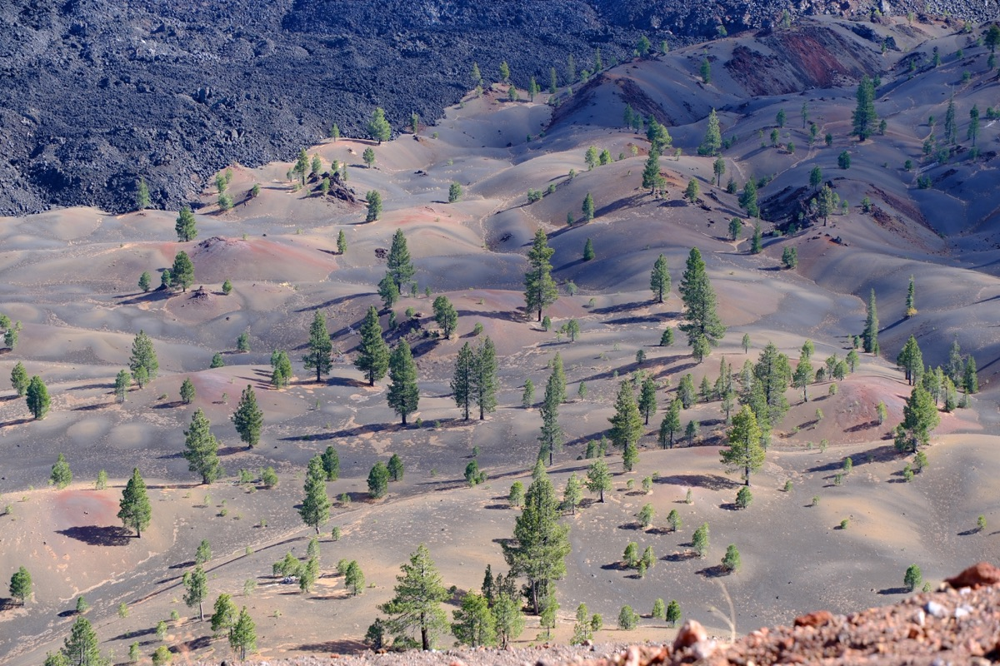

Widespread bedrock water use
Woody plants across the U.S. routinely draw on water stored in weathered bedrock, a source typically left out of hydrologic and ecosystem models.
Contrary to the long-standing assumption that plants access water only in soils, we found that woody plants across the continental U.S. commonly use rock moisture: water stored in the cracks and fissures of weathered bedrock. Because direct measurements of bedrock water are rare, we used plants as sensors, inferring bedrock water use from remotely sensed water balances.
McCormick et al. 2021, Nature. See the project page for maps, data, and code.